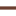

<!doctype html>
<html lang="en">
    <head>
        <meta charset="utf-8">
        <meta http-equiv="X-UA-Compatible" content="IE=edge">
        <meta name="viewport" content="initial-scale=1,user-scalable=no,maximum-scale=1,width=device-width">
        <meta name="mobile-web-app-capable" content="yes">
        <meta name="apple-mobile-web-app-capable" content="yes">
        <link rel="stylesheet" href="css/leaflet.css">
        <link rel="stylesheet" href="css/L.Control.Layers.Tree.css">
        <link rel="stylesheet" href="css/L.Control.Locate.min.css">
        <link rel="stylesheet" href="css/qgis2web.css">
        <link rel="stylesheet" href="css/fontawesome-all.min.css">
        <link rel="stylesheet" href="css/leaflet.photon.css">
        <link rel="stylesheet" href="css/leaflet-measure.css">
        <style>
        html, body, #map {
            width: 100%;
            height: 100%;
            padding: 0;
            margin: 0;
        }
        </style>
        <title>Mapa Infraestructura Logística del Estado de México</title>
    </head>
    <body>
        <div id="map">
        </div>
        <script src="js/qgis2web_expressions.js"></script>
        <script src="js/leaflet.js"></script>
        <script src="js/L.Control.Layers.Tree.min.js"></script>
        <script src="js/L.Control.Locate.min.js"></script>
        <script src="js/multi-style-layer.js"></script>
        <script src="js/leaflet.rotatedMarker.js"></script>
        <script src="js/leaflet.pattern.js"></script>
        <script src="js/leaflet-hash.js"></script>
        <script src="js/Autolinker.min.js"></script>
        <script src="js/rbush.min.js"></script>
        <script src="js/labelgun.min.js"></script>
        <script src="js/labels.js"></script>
        <script src="js/leaflet.photon.js"></script>
        <script src="js/leaflet-measure.js"></script>
        <script src="data/MUNICIPIOS_1.js"></script>
        <script src="data/LOCALIDADESURBANAS_2.js"></script>
        <script src="data/CARRETERAESTATALCUOTA_3.js"></script>
        <script src="data/VIA_FERREA_4.js"></script>
        <script src="data/CARRETERAESTATALLIBRE_5.js"></script>
        <script src="data/CARRETEREAFEDERALCUOTA_6.js"></script>
        <script src="data/CARRETERAFEDERALLIBRE_7.js"></script>
        <script src="data/AEROPUERTO_8.js"></script>
        <script>
        var map = L.map('map', {
            zoomControl:false, maxZoom:28, minZoom:1
        }).fitBounds([[18.57645179286445,-101.19794153560183],[20.32602352299842,-97.04892938992697]]);
        var hash = new L.Hash(map);
        map.attributionControl.setPrefix('<a href="https://github.com/tomchadwin/qgis2web" target="_blank">qgis2web</a> &middot; <a href="https://leafletjs.com" title="A JS library for interactive maps">Leaflet</a> &middot; <a href="https://qgis.org">QGIS</a>');
        var autolinker = new Autolinker({truncate: {length: 30, location: 'smart'}});
        // remove popup's row if "visible-with-data"
        function removeEmptyRowsFromPopupContent(content, feature) {
         var tempDiv = document.createElement('div');
         tempDiv.innerHTML = content;
         var rows = tempDiv.querySelectorAll('tr');
         for (var i = 0; i < rows.length; i++) {
             var td = rows[i].querySelector('td.visible-with-data');
             var key = td ? td.id : '';
             if (td && td.classList.contains('visible-with-data') && feature.properties[key] == null) {
                 rows[i].parentNode.removeChild(rows[i]);
             }
         }
         return tempDiv.innerHTML;
        }
        // modify popup if contains media
        function addClassToPopupIfMedia(content, popup) {
            var tempDiv = document.createElement('div');
            tempDiv.innerHTML = content;
            var imgTd = tempDiv.querySelector('td img');
            if (imgTd) {
                var src = imgTd.getAttribute('src');
                if (/\.(jpg|jpeg|png|gif|bmp|webp|avif)$/i.test(src)) {
                    popup._contentNode.classList.add('media');
                    setTimeout(function() {
                        popup.update();
                    }, 10);
                } else if (/\.(mp3|wav|ogg|aac)$/i.test(src)) {
                    var audio = document.createElement('audio');
                    audio.controls = true;
                    audio.src = src;
                    imgTd.parentNode.replaceChild(audio, imgTd);
                    popup._contentNode.classList.add('media');
                    setTimeout(function() {
                        popup.setContent(tempDiv.innerHTML);
                        popup.update();
                    }, 10);
                } else if (/\.(mp4|webm|ogg|mov)$/i.test(src)) {
                    var video = document.createElement('video');
                    video.controls = true;
                    video.src = src;
                    video.style.width = "400px";
                    video.style.height = "300px";
                    video.style.maxHeight = "60vh";
                    video.style.maxWidth = "60vw";
                    imgTd.parentNode.replaceChild(video, imgTd);
                    popup._contentNode.classList.add('media');
                    // Aggiorna il popup quando il video carica i metadati
                    video.addEventListener('loadedmetadata', function() {
                        popup.update();
                    });
                    setTimeout(function() {
                        popup.setContent(tempDiv.innerHTML);
                        popup.update();
                    }, 10);
                } else {
                    popup._contentNode.classList.remove('media');
                }
            } else {
                popup._contentNode.classList.remove('media');
            }
        }
        var title = new L.Control({'position':'topright'});
        title.onAdd = function (map) {
            this._div = L.DomUtil.create('div', 'info');
            this.update();
            return this._div;
        };
        title.update = function () {
            this._div.innerHTML = '<h2>Mapa Infraestructura Logística del Estado de México</h2>';
        };
        title.addTo(map);
        var abstract = new L.Control({'position':'bottomright'});
        abstract.onAdd = function (map) {
            this._div = L.DomUtil.create('div',
            'leaflet-control abstract');
            this._div.id = 'abstract'
                this._div.setAttribute("onmouseenter", "abstract.show()");
                this._div.setAttribute("onmouseleave", "abstract.hide()");
                this.hide();
                return this._div;
            };
            abstract.hide = function () {
                this._div.classList.remove("abstractUncollapsed");
                this._div.classList.add("abstract");
                this._div.innerHTML = 'i'
            }
            abstract.show = function () {
                this._div.classList.remove("abstract");
                this._div.classList.add("abstractUncollapsed");
                this._div.innerHTML = 'Este mapa muestra las carreteras federales y estatales (libre y cuota), la via férrea, localidades urbanas y los aeropuertos del Estado de México<br />1.- Aeropuerto internacional de Toluca<br />2.- Aeropuerto internacional Felipe Angeles<br />3.- Aeropuerto internacional de la Ciudad de Mexico (Benito<br />Juárez).';
        };
        abstract.addTo(map);
        var zoomControl = L.control.zoom({
            position: 'topleft'
        }).addTo(map);
        L.control.locate({locateOptions: {maxZoom: 19}}).addTo(map);
        var measureControl = new L.Control.Measure({
            position: 'topleft',
            primaryLengthUnit: 'meters',
            secondaryLengthUnit: 'kilometers',
            primaryAreaUnit: 'sqmeters',
            secondaryAreaUnit: 'hectares'
        });
        measureControl.addTo(map);
        document.getElementsByClassName('leaflet-control-measure-toggle')[0].innerHTML = '';
        document.getElementsByClassName('leaflet-control-measure-toggle')[0].className += ' fas fa-ruler';
        var bounds_group = new L.featureGroup([]);
        function setBounds() {
        }
        map.createPane('pane_OSMStandard_0');
        map.getPane('pane_OSMStandard_0').style.zIndex = 400;
        var layer_OSMStandard_0 = L.tileLayer('http://tile.openstreetmap.org/{z}/{x}/{y}.png', {
            pane: 'pane_OSMStandard_0',
            opacity: 1.0,
            attribution: '<a href="https://www.openstreetmap.org/copyright">© OpenStreetMap contributors, CC-BY-SA</a>',
            minZoom: 1,
            maxZoom: 28,
            minNativeZoom: 0,
            maxNativeZoom: 19
        });
        layer_OSMStandard_0;
        map.addLayer(layer_OSMStandard_0);
        function pop_MUNICIPIOS_1(feature, layer) {
            var popupContent = '<table>\
                    <tr>\
                        <th scope="row">Municipio</th>\
                        <td>' + (feature.properties['NOMGEO'] !== null ? autolinker.link(String(feature.properties['NOMGEO']).replace(/'/g, '\'').toLocaleString()) : '') + '</td>\
                    </tr>\
                </table>';
            var content = removeEmptyRowsFromPopupContent(popupContent, feature);
			layer.on('popupopen', function(e) {
				addClassToPopupIfMedia(content, e.popup);
			});
			layer.bindPopup(content, { maxHeight: 400 });
        }

        function style_MUNICIPIOS_1_0() {
            return {
                pane: 'pane_MUNICIPIOS_1',
                opacity: 1,
                color: 'rgba(35,35,35,1.0)',
                dashArray: '',
                lineCap: 'butt',
                lineJoin: 'miter',
                weight: 1.0, 
                fill: true,
                fillOpacity: 1,
                fillColor: 'rgba(235,228,233,1.0)',
                interactive: true,
            }
        }
        map.createPane('pane_MUNICIPIOS_1');
        map.getPane('pane_MUNICIPIOS_1').style.zIndex = 401;
        map.getPane('pane_MUNICIPIOS_1').style['mix-blend-mode'] = 'normal';
        var layer_MUNICIPIOS_1 = new L.geoJson(json_MUNICIPIOS_1, {
            attribution: '',
            interactive: true,
            dataVar: 'json_MUNICIPIOS_1',
            layerName: 'layer_MUNICIPIOS_1',
            pane: 'pane_MUNICIPIOS_1',
            onEachFeature: pop_MUNICIPIOS_1,
            style: style_MUNICIPIOS_1_0,
        });
        bounds_group.addLayer(layer_MUNICIPIOS_1);
        map.addLayer(layer_MUNICIPIOS_1);
        function pop_LOCALIDADESURBANAS_2(feature, layer) {
            var popupContent = '<table>\
                    <tr>\
                        <th scope="row">Localidad</th>\
                        <td>' + (feature.properties['NOMGEO'] !== null ? autolinker.link(String(feature.properties['NOMGEO']).replace(/'/g, '\'').toLocaleString()) : '') + '</td>\
                    </tr>\
                </table>';
            var content = removeEmptyRowsFromPopupContent(popupContent, feature);
			layer.on('popupopen', function(e) {
				addClassToPopupIfMedia(content, e.popup);
			});
			layer.bindPopup(content, { maxHeight: 400 });
        }

        function style_LOCALIDADESURBANAS_2_0() {
            return {
                pane: 'pane_LOCALIDADESURBANAS_2',
                opacity: 1,
                color: 'rgba(35,35,35,1.0)',
                dashArray: '',
                lineCap: 'butt',
                lineJoin: 'miter',
                weight: 1.0, 
                fill: true,
                fillOpacity: 1,
                fillColor: 'rgba(214,155,192,1.0)',
                interactive: true,
            }
        }
        map.createPane('pane_LOCALIDADESURBANAS_2');
        map.getPane('pane_LOCALIDADESURBANAS_2').style.zIndex = 402;
        map.getPane('pane_LOCALIDADESURBANAS_2').style['mix-blend-mode'] = 'normal';
        var layer_LOCALIDADESURBANAS_2 = new L.geoJson(json_LOCALIDADESURBANAS_2, {
            attribution: '',
            interactive: true,
            dataVar: 'json_LOCALIDADESURBANAS_2',
            layerName: 'layer_LOCALIDADESURBANAS_2',
            pane: 'pane_LOCALIDADESURBANAS_2',
            onEachFeature: pop_LOCALIDADESURBANAS_2,
            style: style_LOCALIDADESURBANAS_2_0,
        });
        bounds_group.addLayer(layer_LOCALIDADESURBANAS_2);
        map.addLayer(layer_LOCALIDADESURBANAS_2);
        function pop_CARRETERAESTATALCUOTA_3(feature, layer) {
            var popupContent = '<table>\
                    <tr>\
                        <th scope="row">Número de carriles</th>\
                        <td>' + (feature.properties['NUME_CARR'] !== null ? autolinker.link(String(feature.properties['NUME_CARR']).replace(/'/g, '\'').toLocaleString()) : '') + '</td>\
                    </tr>\
                    <tr>\
                        <th scope="row">Nombre de vía</th>\
                        <td>' + (feature.properties['NOMVIAL'] !== null ? autolinker.link(String(feature.properties['NOMVIAL']).replace(/'/g, '\'').toLocaleString()) : '') + '</td>\
                    </tr>\
                </table>';
            var content = removeEmptyRowsFromPopupContent(popupContent, feature);
			layer.on('popupopen', function(e) {
				addClassToPopupIfMedia(content, e.popup);
			});
			layer.bindPopup(content, { maxHeight: 400 });
        }

        function style_CARRETERAESTATALCUOTA_3_0() {
            return {
                pane: 'pane_CARRETERAESTATALCUOTA_3',
                opacity: 1,
                color: 'rgba(229,147,25,1.0)',
                dashArray: '',
                lineCap: 'round',
                lineJoin: 'round',
                weight: 6.0,
                fillOpacity: 0,
                interactive: true,
            }
        }
        map.createPane('pane_CARRETERAESTATALCUOTA_3');
        map.getPane('pane_CARRETERAESTATALCUOTA_3').style.zIndex = 403;
        map.getPane('pane_CARRETERAESTATALCUOTA_3').style['mix-blend-mode'] = 'normal';
        var layer_CARRETERAESTATALCUOTA_3 = new L.geoJson(json_CARRETERAESTATALCUOTA_3, {
            attribution: '',
            interactive: true,
            dataVar: 'json_CARRETERAESTATALCUOTA_3',
            layerName: 'layer_CARRETERAESTATALCUOTA_3',
            pane: 'pane_CARRETERAESTATALCUOTA_3',
            onEachFeature: pop_CARRETERAESTATALCUOTA_3,
            style: style_CARRETERAESTATALCUOTA_3_0,
        });
        bounds_group.addLayer(layer_CARRETERAESTATALCUOTA_3);
        map.addLayer(layer_CARRETERAESTATALCUOTA_3);
        function pop_VIA_FERREA_4(feature, layer) {
            var popupContent = '<table>\
                    <tr>\
                        <td colspan="2">' + (feature.properties['LINEA'] !== null ? autolinker.link(String(feature.properties['LINEA']).replace(/'/g, '\'').toLocaleString()) : '') + '</td>\
                    </tr>\
                    <tr>\
                        <td colspan="2">' + (feature.properties['SERVICIO'] !== null ? autolinker.link(String(feature.properties['SERVICIO']).replace(/'/g, '\'').toLocaleString()) : '') + '</td>\
                    </tr>\
                    <tr>\
                        <td colspan="2">' + (feature.properties['ID'] !== null ? autolinker.link(String(feature.properties['ID']).replace(/'/g, '\'').toLocaleString()) : '') + '</td>\
                    </tr>\
                    <tr>\
                        <td colspan="2">' + (feature.properties['ENTIDAD'] !== null ? autolinker.link(String(feature.properties['ENTIDAD']).replace(/'/g, '\'').toLocaleString()) : '') + '</td>\
                    </tr>\
                    <tr>\
                        <td colspan="2">' + (feature.properties['CNDICON'] !== null ? autolinker.link(String(feature.properties['CNDICON']).replace(/'/g, '\'').toLocaleString()) : '') + '</td>\
                    </tr>\
                    <tr>\
                        <td colspan="2">' + (feature.properties['VIA'] !== null ? autolinker.link(String(feature.properties['VIA']).replace(/'/g, '\'').toLocaleString()) : '') + '</td>\
                    </tr>\
                    <tr>\
                        <td colspan="2">' + (feature.properties['FECHA_ACT'] !== null ? autolinker.link(String(feature.properties['FECHA_ACT']).replace(/'/g, '\'').toLocaleString()) : '') + '</td>\
                    </tr>\
                    <tr>\
                        <td colspan="2">' + (feature.properties['TIPO_VIA'] !== null ? autolinker.link(String(feature.properties['TIPO_VIA']).replace(/'/g, '\'').toLocaleString()) : '') + '</td>\
                    </tr>\
                    <tr>\
                        <td colspan="2">' + (feature.properties['NIVEL'] !== null ? autolinker.link(String(feature.properties['NIVEL']).replace(/'/g, '\'').toLocaleString()) : '') + '</td>\
                    </tr>\
                    <tr>\
                        <td colspan="2">' + (feature.properties['LONG'] !== null ? autolinker.link(String(feature.properties['LONG']).replace(/'/g, '\'').toLocaleString()) : '') + '</td>\
                    </tr>\
                    <tr>\
                        <td colspan="2">' + (feature.properties['PRECISION'] !== null ? autolinker.link(String(feature.properties['PRECISION']).replace(/'/g, '\'').toLocaleString()) : '') + '</td>\
                    </tr>\
                    <tr>\
                        <td colspan="2">' + (feature.properties['DDP'] !== null ? autolinker.link(String(feature.properties['DDP']).replace(/'/g, '\'').toLocaleString()) : '') + '</td>\
                    </tr>\
                </table>';
            var content = removeEmptyRowsFromPopupContent(popupContent, feature);
			layer.on('popupopen', function(e) {
				addClassToPopupIfMedia(content, e.popup);
			});
			layer.bindPopup(content, { maxHeight: 400 });
        }

        function style_VIA_FERREA_4_0() {
            return {
                pane: 'pane_VIA_FERREA_4',
                interactive: true,
            }
        }
        map.createPane('pane_VIA_FERREA_4');
        map.getPane('pane_VIA_FERREA_4').style.zIndex = 404;
        map.getPane('pane_VIA_FERREA_4').style['mix-blend-mode'] = 'normal';
        var layer_VIA_FERREA_4 = new L.geoJson(json_VIA_FERREA_4, {
            attribution: '',
            interactive: true,
            dataVar: 'json_VIA_FERREA_4',
            layerName: 'layer_VIA_FERREA_4',
            pane: 'pane_VIA_FERREA_4',
            onEachFeature: pop_VIA_FERREA_4,
            style: style_VIA_FERREA_4_0,
        });
        bounds_group.addLayer(layer_VIA_FERREA_4);
        map.addLayer(layer_VIA_FERREA_4);
        function pop_CARRETERAESTATALLIBRE_5(feature, layer) {
            var popupContent = '<table>\
                    <tr>\
                        <th scope="row">Número de carriles</th>\
                        <td>' + (feature.properties['NUME_CARR'] !== null ? autolinker.link(String(feature.properties['NUME_CARR']).replace(/'/g, '\'').toLocaleString()) : '') + '</td>\
                    </tr>\
                    <tr>\
                        <th scope="row">Nombre de vía</th>\
                        <td>' + (feature.properties['NOMVIAL'] !== null ? autolinker.link(String(feature.properties['NOMVIAL']).replace(/'/g, '\'').toLocaleString()) : '') + '</td>\
                    </tr>\
                </table>';
            var content = removeEmptyRowsFromPopupContent(popupContent, feature);
			layer.on('popupopen', function(e) {
				addClassToPopupIfMedia(content, e.popup);
			});
			layer.bindPopup(content, { maxHeight: 400 });
        }

        function style_CARRETERAESTATALLIBRE_5_0() {
            return {
                pane: 'pane_CARRETERAESTATALLIBRE_5',
                opacity: 1,
                color: 'rgba(136,44,206,1.0)',
                dashArray: '',
                lineCap: 'round',
                lineJoin: 'round',
                weight: 3.0,
                fillOpacity: 0,
                interactive: true,
            }
        }
        map.createPane('pane_CARRETERAESTATALLIBRE_5');
        map.getPane('pane_CARRETERAESTATALLIBRE_5').style.zIndex = 405;
        map.getPane('pane_CARRETERAESTATALLIBRE_5').style['mix-blend-mode'] = 'normal';
        var layer_CARRETERAESTATALLIBRE_5 = new L.geoJson(json_CARRETERAESTATALLIBRE_5, {
            attribution: '',
            interactive: true,
            dataVar: 'json_CARRETERAESTATALLIBRE_5',
            layerName: 'layer_CARRETERAESTATALLIBRE_5',
            pane: 'pane_CARRETERAESTATALLIBRE_5',
            onEachFeature: pop_CARRETERAESTATALLIBRE_5,
            style: style_CARRETERAESTATALLIBRE_5_0,
        });
        bounds_group.addLayer(layer_CARRETERAESTATALLIBRE_5);
        map.addLayer(layer_CARRETERAESTATALLIBRE_5);
        function pop_CARRETEREAFEDERALCUOTA_6(feature, layer) {
            var popupContent = '<table>\
                    <tr>\
                        <th scope="row">Número de carriles</th>\
                        <td>' + (feature.properties['NUME_CARR'] !== null ? autolinker.link(String(feature.properties['NUME_CARR']).replace(/'/g, '\'').toLocaleString()) : '') + '</td>\
                    </tr>\
                    <tr>\
                        <th scope="row">Nombre de vía</th>\
                        <td>' + (feature.properties['NOMVIAL'] !== null ? autolinker.link(String(feature.properties['NOMVIAL']).replace(/'/g, '\'').toLocaleString()) : '') + '</td>\
                    </tr>\
                </table>';
            var content = removeEmptyRowsFromPopupContent(popupContent, feature);
			layer.on('popupopen', function(e) {
				addClassToPopupIfMedia(content, e.popup);
			});
			layer.bindPopup(content, { maxHeight: 400 });
        }

        function style_CARRETEREAFEDERALCUOTA_6_0() {
            return {
                pane: 'pane_CARRETEREAFEDERALCUOTA_6',
                opacity: 1,
                color: 'rgba(107,62,47,1.0)',
                dashArray: '',
                lineCap: 'round',
                lineJoin: 'round',
                weight: 3.0,
                fillOpacity: 0,
                interactive: true,
            }
        }
        map.createPane('pane_CARRETEREAFEDERALCUOTA_6');
        map.getPane('pane_CARRETEREAFEDERALCUOTA_6').style.zIndex = 406;
        map.getPane('pane_CARRETEREAFEDERALCUOTA_6').style['mix-blend-mode'] = 'normal';
        var layer_CARRETEREAFEDERALCUOTA_6 = new L.geoJson(json_CARRETEREAFEDERALCUOTA_6, {
            attribution: '',
            interactive: true,
            dataVar: 'json_CARRETEREAFEDERALCUOTA_6',
            layerName: 'layer_CARRETEREAFEDERALCUOTA_6',
            pane: 'pane_CARRETEREAFEDERALCUOTA_6',
            onEachFeature: pop_CARRETEREAFEDERALCUOTA_6,
            style: style_CARRETEREAFEDERALCUOTA_6_0,
        });
        bounds_group.addLayer(layer_CARRETEREAFEDERALCUOTA_6);
        map.addLayer(layer_CARRETEREAFEDERALCUOTA_6);
        function pop_CARRETERAFEDERALLIBRE_7(feature, layer) {
            var popupContent = '<table>\
                    <tr>\
                        <th scope="row">Número de carriles</th>\
                        <td>' + (feature.properties['NUME_CARR'] !== null ? autolinker.link(String(feature.properties['NUME_CARR']).replace(/'/g, '\'').toLocaleString()) : '') + '</td>\
                    </tr>\
                    <tr>\
                        <th scope="row">Nombre de vía</th>\
                        <td>' + (feature.properties['NOMVIAL'] !== null ? autolinker.link(String(feature.properties['NOMVIAL']).replace(/'/g, '\'').toLocaleString()) : '') + '</td>\
                    </tr>\
                </table>';
            var content = removeEmptyRowsFromPopupContent(popupContent, feature);
			layer.on('popupopen', function(e) {
				addClassToPopupIfMedia(content, e.popup);
			});
			layer.bindPopup(content, { maxHeight: 400 });
        }

        function style_CARRETERAFEDERALLIBRE_7_0() {
            return {
                pane: 'pane_CARRETERAFEDERALLIBRE_7',
                opacity: 1,
                color: 'rgba(238,234,16,1.0)',
                dashArray: '',
                lineCap: 'round',
                lineJoin: 'round',
                weight: 3.0,
                fillOpacity: 0,
                interactive: true,
            }
        }
        map.createPane('pane_CARRETERAFEDERALLIBRE_7');
        map.getPane('pane_CARRETERAFEDERALLIBRE_7').style.zIndex = 407;
        map.getPane('pane_CARRETERAFEDERALLIBRE_7').style['mix-blend-mode'] = 'normal';
        var layer_CARRETERAFEDERALLIBRE_7 = new L.geoJson(json_CARRETERAFEDERALLIBRE_7, {
            attribution: '',
            interactive: true,
            dataVar: 'json_CARRETERAFEDERALLIBRE_7',
            layerName: 'layer_CARRETERAFEDERALLIBRE_7',
            pane: 'pane_CARRETERAFEDERALLIBRE_7',
            onEachFeature: pop_CARRETERAFEDERALLIBRE_7,
            style: style_CARRETERAFEDERALLIBRE_7_0,
        });
        bounds_group.addLayer(layer_CARRETERAFEDERALLIBRE_7);
        map.addLayer(layer_CARRETERAFEDERALLIBRE_7);
        function pop_AEROPUERTO_8(feature, layer) {
            var popupContent = '<table>\
                    <tr>\
                        <th scope="row">Aeropuerto</th>\
                        <td>' + (feature.properties['Aeropuerto'] !== null ? autolinker.link(String(feature.properties['Aeropuerto']).replace(/'/g, '\'').toLocaleString()) : '') + '</td>\
                    </tr>\
                </table>';
            var content = removeEmptyRowsFromPopupContent(popupContent, feature);
			layer.on('popupopen', function(e) {
				addClassToPopupIfMedia(content, e.popup);
			});
			layer.bindPopup(content, { maxHeight: 400 });
        }

        function style_AEROPUERTO_8_0() {
            return {
                pane: 'pane_AEROPUERTO_8',
        rotationAngle: 0.0,
        rotationOrigin: 'center center',
        icon: L.icon({
            iconUrl: 'markers/AEROPUERTO_8.svg',
            iconSize: [50.16, 50.16]
        }),
                interactive: true,
            }
        }
        function style_AEROPUERTO_8_1() {
            return {
                pane: 'pane_AEROPUERTO_8',
        rotationAngle: 0.0,
        rotationOrigin: 'center center',
        icon: L.icon({
            iconUrl: 'markers/AEROPUERTO_8.svg',
            iconSize: [50.16, 50.16]
        }),
                interactive: true,
            }
        }
        map.createPane('pane_AEROPUERTO_8');
        map.getPane('pane_AEROPUERTO_8').style.zIndex = 408;
        map.getPane('pane_AEROPUERTO_8').style['mix-blend-mode'] = 'normal';
        var layer_AEROPUERTO_8 = new L.geoJson.multiStyle(json_AEROPUERTO_8, {
            attribution: '',
            interactive: true,
            dataVar: 'json_AEROPUERTO_8',
            layerName: 'layer_AEROPUERTO_8',
            pane: 'pane_AEROPUERTO_8',
            onEachFeature: pop_AEROPUERTO_8,
            pointToLayers: [function (feature, latlng) {
                var context = {
                    feature: feature,
                    variables: {}
                };
                return L.marker(latlng, style_AEROPUERTO_8_0(feature));
            },function (feature, latlng) {
                var context = {
                    feature: feature,
                    variables: {}
                };
                return L.marker(latlng, style_AEROPUERTO_8_1(feature));
            },
        ]});
        bounds_group.addLayer(layer_AEROPUERTO_8);
        map.addLayer(layer_AEROPUERTO_8);
        const url = {"Nominatim OSM": "https://nominatim.openstreetmap.org/search?format=geojson&addressdetails=1&",
        "France BAN": "https://api-adresse.data.gouv.fr/search/?"}
        var photonControl = L.control.photon({
            url: url["Nominatim OSM"],
            feedbackLabel: '',
            position: 'topleft',
            includePosition: true,
            initial: true,
            // resultsHandler: myHandler,
        }).addTo(map);
        photonControl._container.childNodes[0].style.borderRadius="10px"
        // Create a variable to store the geoJSON data
        var x = null;
        // Create a variable to store the marker
        var marker = null;
        // Add an event listener to the Photon control to create a marker from the returned geoJSON data
        var z = null;
        photonControl.on('selected', function(e) {
            console.log(photonControl.search.resultsContainer);
            if (x != null) {
                map.removeLayer(obj3.marker);
                map.removeLayer(x);
            }
            obj2.gcd = e.choice;
            x = L.geoJSON(obj2.gcd).addTo(map);
            var label = typeof obj2.gcd.properties.label === 'undefined' ? obj2.gcd.properties.display_name : obj2.gcd.properties.label;
            obj3.marker = L.marker(x.getLayers()[0].getLatLng()).bindPopup(label).addTo(map);
            map.setView(x.getLayers()[0].getLatLng(), 17);
            z = typeof e.choice.properties.label === 'undefined'? e.choice.properties.display_name : e.choice.properties.label;
            console.log(e);
            e.target.input.value = z;
        });
        var search = document.getElementsByClassName("leaflet-photon leaflet-control")[0];
        search.classList.add("leaflet-control-search")
        search.style.display = "flex";
        search.style.backgroundColor="rgba(255,255,255,0.5)" 

        // Create the new button element
        var button = document.createElement("div");
        button.id = "gcd-button-control";
        button.className = "gcd-gl-btn fa fa-search search-button";

        // Insert the button at the beginning of the search control
        search.insertBefore(button, search.firstChild);
        last = search.lastChild;
        last.style.display = "none";
        button.addEventListener("click", function (e) {
            if (last.style.display === "none") {
                last.style.display = "block";
            } else {
                last.style.display = "none";
            }
        });
        var overlaysTree = [
            {label: ' AEROPUERTO', layer: layer_AEROPUERTO_8},
            {label: ' CARRETERA FEDERAL LIBRE', layer: layer_CARRETERAFEDERALLIBRE_7},
            {label: ' CARRETEREA FEDERAL CUOTA', layer: layer_CARRETEREAFEDERALCUOTA_6},
            {label: ' CARRETERA ESTATAL LIBRE', layer: layer_CARRETERAESTATALLIBRE_5},
            {label: ' VIA_FERREA', layer: layer_VIA_FERREA_4},
            {label: ' CARRETERA ESTATAL CUOTA', layer: layer_CARRETERAESTATALCUOTA_3},
            {label: ' LOCALIDADES URBANAS', layer: layer_LOCALIDADESURBANAS_2},
            {label: ' MUNICIPIOS ', layer: layer_MUNICIPIOS_1},
            {label: "OSM Standard", layer: layer_OSMStandard_0},]
        var lay = L.control.layers.tree(null, overlaysTree,{
            //namedToggle: true,
            //selectorBack: false,
            //closedSymbol: '&#8862; &#x1f5c0;',
            //openedSymbol: '&#8863; &#x1f5c1;',
            //collapseAll: 'Collapse all',
            //expandAll: 'Expand all',
            collapsed: true,
        });
        lay.addTo(map);
        setBounds();
        var i = 0;
        layer_AEROPUERTO_8.eachLayer(function(layer) {
            var context = {
                feature: layer.feature,
                variables: {}
            };
            layer.bindTooltip((layer.feature.properties['id'] !== null?String('<div style="color: #323232; font-size: 10pt; font-family: \'Open Sans\', sans-serif;">' + layer.feature.properties['id']) + '</div>':''), {permanent: true, offset: [-0, -16], className: 'css_AEROPUERTO_8'});
            labels.push(layer);
            totalMarkers += 1;
              layer.added = true;
              addLabel(layer, i);
              i++;
        });
        resetLabels([layer_AEROPUERTO_8]);
        map.on("zoomend", function(){
            resetLabels([layer_AEROPUERTO_8]);
        });
        map.on("layeradd", function(){
            resetLabels([layer_AEROPUERTO_8]);
        });
        map.on("layerremove", function(){
            resetLabels([layer_AEROPUERTO_8]);
        });
        </script>        
    </body>
</html>
